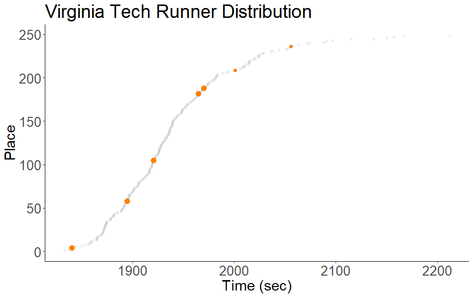

Organization(s): Carnegie Mellon University & The Atlanta Hawks Language(s): R
For summer 2021, I was a member of a 15 person cohort in an REU at Carnegie Mellon University.
In this program, students work on applied projects in statistics and data science through the lens of sports analytics.
Advised by Max Horowitz at the Atlanta Hawks, my team researched the influence of player
fatigue on game outcomes. We used R for scraping in-game tracking data (credit the NBAr package)
and aggregated over 300 variables about players on a game by game level for a decade worth of games.
We found the narrative portrayed by sports media is often inaccurate,
substantial evidence players achieve a high degree of recovery between games,
and offered a framework for isolating factors that contribute to game outcomes.
A link to the paper will be available once we complete the publication process.
CMSAC Project Showcase
AI Index
Organization(s): Stanford University & University of Wyoming Language(s):Bash, R
Every year the HAI lab at Stanford and partners release a report tracking and summarizing progress in AI.
Using the high-performance computing cluster at the University of Wyoming I ran a set of computational experiments
examing the improvements in Boolean Satisfiability solvers over the last 5 years.
My experiments are inclueded and I am cited on page 72.
As part of the 2021 TAMU datathon Goldman Sachs & Co put out a challenge to model the relationship between the stock market and the environment.
My team got first place in this 24 hour challenge and in that time I built our primary series of models.
After discussing how the markets might behave in conjunction with the environment, I realized there would be a serious issue decomposing what is responsible for market changes.
My teams exploratory analysis confirmed that many of our environmental metrics worsened over time while the market grew;
however, these trends were not necessarily systemically related. The goal of my contribution became how do I expose the underlying relationship between the environment and market
behavior in absence of the growth of the US economy. For the details on how I went about this you can check out the devpost.
I've been an avid runner for nearly a decade now, and my brother currently runs for a collegiate cross-country and track program.
While discussing my brother's races, I realized the scoring of cross-country meets leaves room for optimization.
Team scores are computed by summing the places of the top 5 runners on a team.
However, a field of runners is not uniformly distributed, as a result all improvements in time do not equally influence team score.
It turns out the places of runners in a cross-country race tend to be generally gaussian.
This means the closer a runner is to the median of the field the same percentage improvement in their time yields a greater positive impact on their team's score.
The graphic below gives a visual sense of why this is the case.
After validating my initial assumptions, I created a script that returns the runners on a team ordered by how sensitivities in their race influence their team's score.
I wrote a report linked below to formalize my thoughts on this problem and why it matters.

The full report. Cross-country.pdf
Complete the Maze
Organization(s): University of Wyoming Languages(s): Java
For COSC 3011, as part of a 4-person team, I wrote a complete the maze game.
The game consists of a GUI, timing system, reading and writing to binary files to
store and retrieve the state of the game, and the ability for users to upload their own mazes.
The project was an exercise in the implementation of concepts that increase the robustness of large software systems.
It was accompanied by changes in design requirements throughout the development process
challenging teams’ use of encapsulation.
In the git repo, there are design docs detailing the design decisions we made as a team,
a users manual, and a discussion of the different issues we encountered throughout the project.
Organization(s): University of Wyoming Language(s):Bash, R, Python
In the MALLET lab I worked on a project improving automated algorithm selection. Traditionally, automated algorithm selection models are trained on the problem instance
feature values and performance data from algorithm runs. The project I work on showed training these automated algorithm selection
models on the feature values of the algorithms in addition to problem instance features improves overall performance.
This allows the evaluation of sets of problem instances in less time and with less memory by choosing the most optimal algorithm more frequently.
An extended abstract on my work submitted to AAAI the Undergraduate Consortium. Abstract.pdf